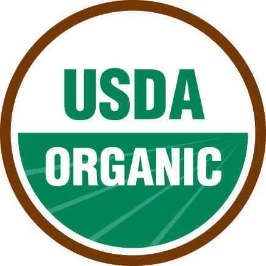
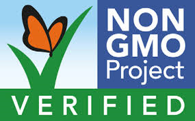

Dave's Killer Bread® 21 Whole Grains and Seeds Organic Bread 27 oz. Loaf
Ingredients
Organic Whole Wheat (Organic Whole Wheat Flour, Organic Cracked Whole Wheat), Water, Organic Dried Cane Syrup (Sugar), 21 Whole Grains and Seeds Mix (Organic Whole Flax Seeds, Organic Sunflower Seeds, Organic Ground Whole Flax Seeds, organic Un-Hulled Brown Sesame Seeds, Organic Rolled Oats, organic Triticale, organic Pumpkin Seeds, Organic Un-Hulled Black Sesame Seeds, organic Rolled Spelt, organic Millet, Organic Rolled Barley, Organic Rolled Rye, Organic Blue Cornmeal, Organic Brown Rice Flour, Organic yellow Cornmeal, Organic Quinoa, Organic Rolled Whole Wheat, organic Buckwheat Flour, Organic Sorghum Flour, Organic Poppy Seeds), Organic Wheat Gluten, Organic Oat Fiber, Organic Molasses, Sea Salt, yeast, Organic Cultured Whole Wheat.
- 
- 
Current price: $4.97
Qty:
Comment
Nutrition Facts
How much do you consume per meal?:Serving Size: 1 slice (45g)
Servings per container: 17
| Amount Per Serving | |||||
|---|---|---|---|---|---|
| Calories | 120 | ||||
| Calories from Fat | 15 | % Daily Values* | |||
| Total Fat | 2 | g | 3 | % | |
| Saturated Fat | 0 | g | 0 | % | |
| Trans Fat | 0 | g | |||
| Cholesterol | 0 | mg | 0 | % | |
| Sodium | 180 | mg | 8 | % | |
| Potassium | 115 | mg | 4 | % | |
| Total Carbohydrate | 22 | g | 7 | % | |
| Dietary Fiber | 5 | g | 19 | % | |
| Sugars | 5 | g | |||
| Protein | 5 | g | |||
| Vitamin A | 69 | % | Vitamin C | 0 | % |
| Calcium | 2 | % | Iron | 8 | % |
| Thiamin | 15 | % | Riboflavin | 4 | % |
| Niacin | 8 | % | Folic Acid | 4 | % |
| Vitamin B6 | 4 | % | Vitamin E | 0 | % |
| Vitamin K | 0 | % | Zinc | 6 | % |
| Manganese | 45 | % | Copper | 6 | % |
| Phosphorus | 10 | % | Selenium | 20 | % |
| Magnesium | 10 | % | Pantothenic Acid | 2 | % |
*Percent Daily Values are based on a 2,000 calorie diet. Your daily values may be higher or lower depending on your calorie needs.